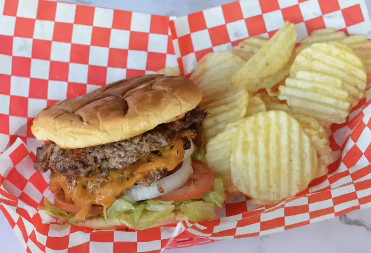

Home
Simple Smashburgers

A smashburger in a plaid fast food basket, along with some plain Ruffles.
Description
These incredibly easy smashburgers take just 20 minutes of time total for 4 burgers!
Smashburgers are basically regular
burger patties that have been smooshed very
thin, and then stacked on top of each other with a slice of cheese inbetween.
They're very juicy and flavorful because of the perfect sear that they get.
You can cook these on a grill or on a pan, but I
recommend doing it on a
grill. Enjoy!
Ingredients
Steps
- Preheat a grill on high head and lightly oil. Preheat a flat-top griddle on the grill until smoking.
- Spread butter on the inside of the buns and toast until browned. Set aside.
- Form meat into 8 loose-packed 2 oz. balls.
- Place the balls onto the flat-top griddle and smash until 0.25in. thick. Use two spatulas to smash. Sprinkle with salt.
- Grill for 45 seconds, until the edges are dark rown. Flip over the patties and cover 4 with cheese.
- Grill for another 15-20 seconds, then stack the un-cheesed ones on top of the cheesed ones. Move to a bun.
- Serve with whatever toppings you want and whatever chips you like!